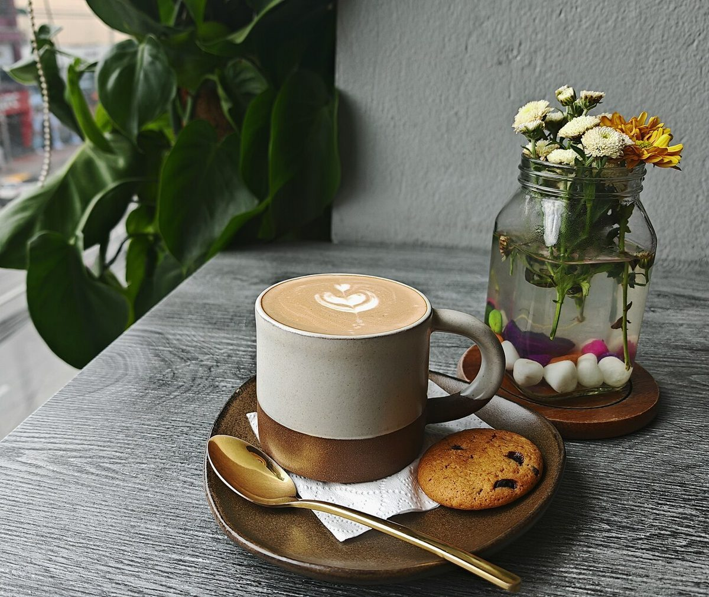

1差込刃
アクセス
場所のご案内
確認できているのは所在地とInstagramのみです。そのほかは準備中です。

| 所在地 | 〒639-2163 奈良県葛城市八川133 |
|---|---|
| 電話 | 準備中 |
| 営業時間 | 準備中 |
| 定休日 | 準備中 |
| ご予約 | 準備中 |
| 駐車場 | 準備中 |
| SNS | Instagram @panmoegi |
ギャラリー(イメージ)
コーヒーの写真



写真はコーヒーのイメージです。お店のものではありません。
アクセス
確認できているのは所在地とInstagramのみです。そのほかは準備中です。
| 所在地 | 〒639-2163 奈良県葛城市八川133 |
|---|---|
| 電話 | 準備中 |
| 営業時間 | 準備中 |
| 定休日 | 準備中 |
| ご予約 | 準備中 |
| 駐車場 | 準備中 |
| SNS | Instagram @panmoegi |
ギャラリー(イメージ)

写真はコーヒーのイメージです。お店のものではありません。